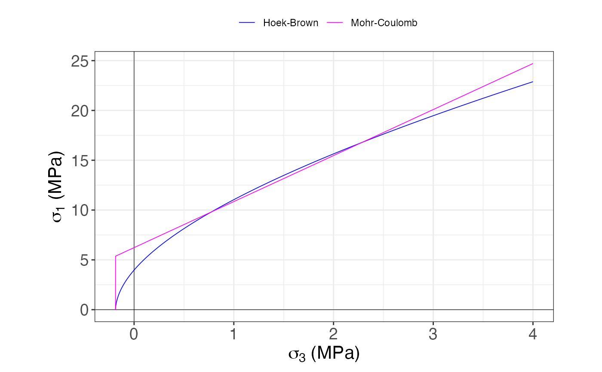
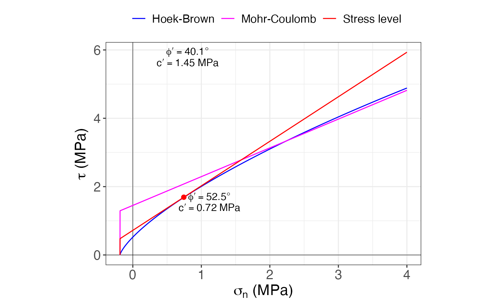

Calculates the Hoek-Brown criterion for the given data and for the given level of stress (unit weight and depth), and an option for plotting it.
Usage
Hoek_Brown(
sig.ci,
GSI,
mi,
MR,
D,
height,
unit.weight,
use = c("general", "tunnels", "slopes")
)
Hoek_Brown_plot(HB)Arguments
- sig.ci
The unconfined compressive strength of the intact rock, in MPa
- GSI
The Geological Strength Index
- mi
The intact rock constant
- MR
the modulus ratio
- D
The quality of the explosive campaing design
- height
The height or depth for which to determine the stress level and parameters
- unit.weight
The unit weight of the rock, in kN/m3
- use
The use expected for the rock mass (general, tunnels, or slopes)
- HB
The result from running
Hoek_Brown()
Value
For Hoek_Brown(): a list with a list of the resulting parameters of the rock mass and 3 data frames: Shear envelopes for Mohr-Coulomb and Hoek-Brown criteria, Principal stresses envelopes for Mohr-Coulomb and Hoek-Brown criteria, and stress level for the given height and unit weight
For Hoek_Brown_plot(): a list with two ggplot objects for the Hoek-Brown criterion (principal stresses and normal-shear stresses)
Details
Tables for some of the input parameters can be found in the directory where the package is installed, just run the following command to find this path: system.file(package = "GMisc")
References
Hoek, E. & Brown, E. T. (1980). Empirical strength criterion for rock masses. J. Geotech. Eng. Div. ASCE 106 (GT9): 1013-1035.
Hoek, E., Carranza-Torres, C. & Corkum, B. (2002). Hoek-Brown Failure Criterion - 2002 Edition. Proc. NARMS-TAC Conference, Toronto. 267-273.
Hoek, E. & Marinos, P. (2007). A brief history of the development of the Hoek-Brown criterion. Soils and Rocks, No. 2.
See also
Other rock mechanics:
Barton_Choubey(),
UCS()
Examples
sig.ci = 16
GSI = 75
mi = 13
MR = 300
D = 0
height = 40
unit.weight = 18.6
HB = Hoek_Brown(sig.ci, GSI, mi, MR, D, height, unit.weight)
HB
#> $Results
#> $Results$sig.ci
#> [1] 16
#>
#> $Results$GSI
#> [1] 75
#>
#> $Results$mi
#> [1] 13
#>
#> $Results$D
#> [1] 0
#>
#> $Results$mb
#> [1] 5.32
#>
#> $Results$s
#> [1] 0.0622
#>
#> $Results$a
#> [1] 0.501
#>
#> $Results$MR
#> [1] 300
#>
#> $Results$Ei
#> [1] 4800
#>
#> $Results$sig.3.max
#> [1] 4
#>
#> $Results$sig.t
#> [1] -0.187
#>
#> $Results$sig.c
#> [1] 3.98
#>
#> $Results$sig.cm
#> [1] 5.87
#>
#> $Results$Erm
#> [1] 3918.48
#>
#> $Results$phi
#> [1] 40.1
#>
#> $Results$c
#> [1] 1.45
#>
#> $Results$phi.h
#> [1] 52.5
#>
#> $Results$c.h
#> [1] 0.72
#>
#>
#> $shear
#> # A tibble: 12,564 × 3
#> sig.n crit tau
#> <dbl> <chr> <dbl>
#> 1 -0.187 Hoek-Brown 0.001
#> 2 -0.187 Mohr-Coulomb 0
#> 3 -0.187 Stress level 0
#> 4 -0.186 Hoek-Brown 0.011
#> 5 -0.186 Mohr-Coulomb 1.29
#> 6 -0.186 Stress level 0.478
#> 7 -0.185 Hoek-Brown 0.018
#> 8 -0.185 Mohr-Coulomb 1.29
#> 9 -0.185 Stress level 0.479
#> 10 -0.184 Hoek-Brown 0.024
#> # ℹ 12,554 more rows
#>
#> $princ.stress
#> # A tibble: 8,376 × 3
#> sig.3 crit sig.1
#> <dbl> <chr> <dbl>
#> 1 -0.187 Hoek-Brown 0
#> 2 -0.187 Mohr-Coulomb 0
#> 3 -0.186 Hoek-Brown 0.113
#> 4 -0.186 Mohr-Coulomb 5.37
#> 5 -0.185 Hoek-Brown 0.231
#> 6 -0.185 Mohr-Coulomb 5.38
#> 7 -0.184 Hoek-Brown 0.323
#> 8 -0.184 Mohr-Coulomb 5.38
#> 9 -0.183 Hoek-Brown 0.402
#> 10 -0.183 Mohr-Coulomb 5.39
#> # ℹ 8,366 more rows
#>
#> $stress.level
#> # A tibble: 1 × 3
#> sign tau crit
#> <dbl> <dbl> <chr>
#> 1 0.744 1.69 Stress level
#>
Hoek_Brown_plot(HB)
#> $princ.stresses

#>
#> $normal.shear

#>